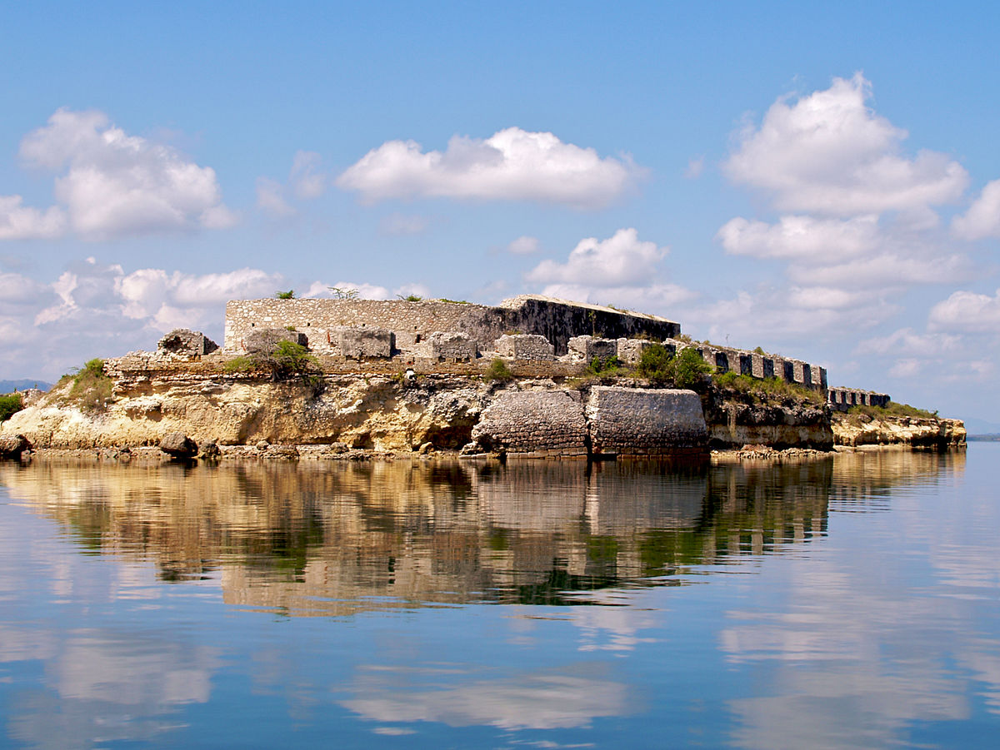

la ville de forliberte est fondee en 1578 par les Espagnols qui l'appelaient Bayaha. Au XVIIe siecle, les boucaniers se servent des ilets de la rade comme rapaire lors de chasses sur la terre ferme. Apres le traite de Rijswick en 1697,par lequel l'Espagne reconnait l'occupation par la France de la partie occidentale d'hispaniola,Joseph d'Honon de Gallifet,gouverneur de la tortue,installe a Bayaha des soldats congedies de la garnison du cap-Francais,faisant de la zone un poste de vigi face aux Espagnols.Plusieurs sucrerises et indigoteries s'y developpent.Le 8 aout 1730, Etienne de Chastenoye,gouverneur de l'ili sainte-croix,pose la premiere pierre d'un fort:le fort et la ville de Bayaha prennent le non de Fort Dophin,en hommage au dauphin Louis,fils du roiLouis XV[2] La premiere proclamation de l'independannce d Haiti a ete faire a fort-Dauphin le 29 novembre 1803 par Dessalines,Henri Christophe et Clerveau,quelques jours apres la bataille de vertieres.Le 26 mars 1811, Henri Christophe se fait proclamer roi du nord,sous le nom de Henri premier a Fort Dauphin qui est rebaptisee Fort Royal. la ville prend le nom de Fort-Libertee a la fin du regne d'Henri Christophe,en 1820.
La cite de Fort-Libertee a beaucoup soufert du tremblement de terre de 1842 ,mais on peut encore observer plusieur maison a l'etage inferieur ancien ou le balcon en bois , datant de l'epoque coloniale.Au centre de la place d'Armes, concue en 1740 mais profondement est entouree de conons recuperes au fort Dauphin aores l'independance L'arc de triomphe est une structure monumentale de couleur jaune édifiée au début du xxe siècle à l'entrée de la ville. Au-dessus de celui-ci, une inscription, « la douceur dans l'effort », reflète le caractère somnolent de la cité, restée longtemps à l'écart du développement régional. La fontaine coloniale, placée sur la Grande-rue (avenue Sténio-Vincent), a été construite en pierre de taille importée de France. Elle est maintenant peinte en rouge et encastrée entre deux maisons. La place d'Armes date de l'époque coloniale, elle a subi de grandes transformations depuis le xviiie siècle. Une fontaine est placée au milieu de la place, elle a été achevée en 1787. Elle a suscité des polémiques à cause de son coût exorbitant à l'époque. Le Fort Dauphin ou Fort Saint-Joseph se trouve au bout de la Grande rue, à la Pointe de Roche. Le fort a été construit dans le prolongement de l'axe central de la ville. C'est, depuis 1730, un lieu stratégique parachevant le système défensif de protection de l'intérieur des terres. Il a été achevé en 1735, à l'exception des plates-formes des batteries en 17433. L'île Bayau, qui était le lieu de prédilection des flibustiers au xviie siècle. L'ouest de l'île était alors réservé au carénage des grands vaisseaux. Les forts de la Bouque sont situés à l'embouchure Est de la baie de Fort-Liberté, on le rejoint avec un canot, à moteur ou une barque depuis l'embarcadère situé près de la douane. Les pêcheurs organisent des excursions dans la baie permettent d'accéder aux quatre forts de la rive occidentale du goulet, la « bouque » que les Français ont construite pour défendre l'accès à Fort-Dauphin. Du sud au nord : le Fort Saint-Frédéric, commencé en 1740 et resté au nord le Fort Saint-Charles, édifié dans les années 1740, et la Batterie de l'anse, qui date de 1756, avec son parapet en ligne brisée du côté de la mer et sa poudrière. Bâti sur l'emplacement d'un ancien fort espagnol le Fort la Bouque reçoit sa première garnison en 1736 et sert de prison d'État sous l'empereur Faustin 1er. Les ruines de son donjon carré sont entourées d'un fossé, le tout étant placé dans une enceinte fortifiée. Une partie des matériaux utilisés pour la construction de tous ces forts provenait de France, et servait, de même que les fûts de canon, de test aux navires. Personnalités